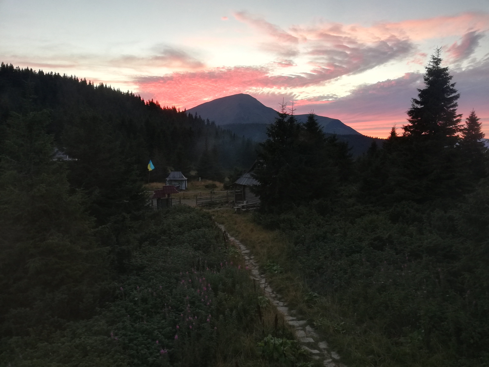

Travel
Хоба, а ось і. Я шапка мандрівник)
Так ось, що хотів розповісти, хоча гадаю за назвою сторінки, ти вже
зрозумів де опинився) Вважаю, що так тому слухай.
Чи, закрадалась до тебе колись думка - скільки в твоєму місці, країні чи навколо тебе красивих місць?
Я думаю, що Так. А, отже хочу розповісти тобі, одну маленьку історію з свого життя. Як я колись, з шапкою
помічником відпочивав в кав'ярні, і мова пішла як раз на ту тему. Про, яку я тобі розповідаю.
А саме про подорожі! Я дуже полюбив цю темку, ще з програми "Орел та решка". Гадаю, ти її бачив)
Тому що, я в дитинстві з неї фанатів. Завжди, пам'ятаю як сидів у телевізора, і мріяв хочаб в одне місце з тих,
що там показували на екрані потрапити.
І знаєшь, ось як я виріс. Я потрапив) в декілька з тих місць, що
бачив
на цій програмі. Кхм, трохи відійшов від розповіді, хех
Що ж повернімось до кав'ярні
Де, ми з шапкою помічником за кружкою пряників, та чаю. Ахаха, так так нехай буде крушка пряників, чому б ні)
Почали розмову про те. Які гарні місця в нашій країні Є.
Яких ми банально можемо не помічати, за те що
поринули в побуті (та наших сравах, від чого нам здається, що
вся краса десь там за горозинтом нашої країни, коли насправді вона під носом. Тільки треба її помітити. "На
вушко" але це, моя думка. Можливо це не так)
І річ, зайшла за наші гори. А в моїй країни, ці гори іміновані як, Карпати.Боже мій ви не уявляєте, яку красу
ми відкрили для себе, яка була у нас під боком.
Тай як ви думаєте пішло, далі діло?
- Ми просто допили, каву та закінчили приємну розмову
- Поговорили, тай все
- Сиділи розмовляли, розмовляли і вирішили поїхати в мандрівку
Оу, а ти молодець! Здогадався)
Так ми, вирішили поїхати у мандрівку Юхууу. Дорочі, як ти зрозумів в спонтану мандрівку, що саме цікаве. А як,
то кажуть спонтані мандрівки завжди цікаві та сповнені пригод! І в нас, уж повір траплялись пригоди тому що, ця
подорож трапилась під час карантину "Covid-19". Але, про це можливо другим разом (якщо захочешь десь у
чаті
дискорда, розповім). Можу, ще сказати що час на який, наша подорож розпочалась, був вдалий. Так, як у
нас була
відпуска, ну як у нас. Вона була тільки в мене ахах, а ось друг взяв відгул на своїй праці(і не пошкодував
P.s це була його перша подорж).
Ось, і ми вирушили в нашу мандрівку через два дні після домовленості. Так, такі ми вчора сказали, сьогодні без
ніяких думок вирушили, завчасно склавши list, що нам потрібно. Закупились, і вперед!
Добравшись до місця, де нас зустріла жінка в якої ми зупинились, на тиждень. Але з тижня, в будинку ми були
тільки 3 дні, весь інший час в горах) Ми вирушили в наш похід, до найвищої точки нашої, країни! А, саме на
ГОВЕРЛУ
Похід, наш був великий в одну сторону ми топали 26 кілометрів. Через гору Петрос, яка якщо не помиляюсь, на 40
метрів нища за Говерлу. Ми навіть на початку шляху, встигли загубитись. Зрозумівши, це ми повернулись назад і
зрозуміли куди нам далі йти. Цікаво, як ми взагалі йшли без гіда?
Для туристів, одинаків чи екстрималів. Є помітки на всьому шляху, на деревах камнях тощо. Щоб, могли
легко орієнтуватись в дорозі, та не зійти з дороги (як ми на початку)))
Та, що я все розказую тай розказую. Давайте покажу вам краще, хочаб декілька власних фото, знятих на телефон:
Псс, зменши максимально сайт щоб роздивитись краще, всі фото))
На цьому місці була наша, перше перемога, адже ми вважали що ходити в горах це не так і тяжко, але як ми помилялись (хоча і певний опит був). Тому якісне взуття, було нам у нагоді.
Тут був наш перший перевал, та перша ночівка в горах.
Я, думаю по знаку і так зрозуміло де ми)
Просто гарна, ранкова квіточка.

Поглянте, як гарно сонячне проміня пробивається, скрізь хмари.
Ще одне
У кав'ярні, за кавою і розмовою. Нас на подорож надихнула же одна річ. Це відео, нашого українського
блогера, який саме за 4 місяці до нашої подорожі також був у, Карпатах перший раз.
Залишаю вам силку на це відео, та рекомендую переглянути (та можете і не одно, його відео поглянути, не
пошкодуєте)
Стій стій, ти забув дещо взяти для кращего перегляду, а саме:
-
Візьми
- Чайку
-
Також
- Про вкусняшки, не забудь
-
Та
- Приємного перегляду, надіюсь сподобається
Лови посилання|
Карпати
Ох Йо мА Йо, мені вже час бігти завтра рано вставати на роботу((
Ніхто не хоче, замість мене сходити? - Та жартую!)